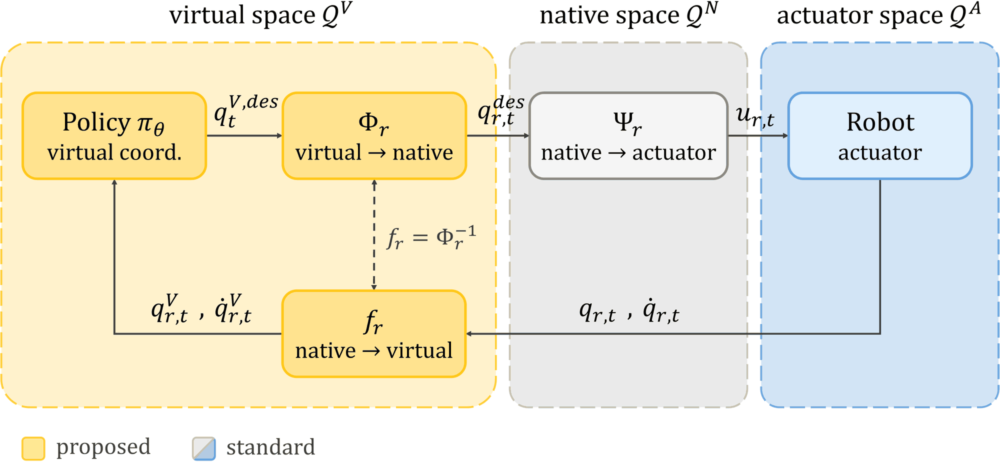
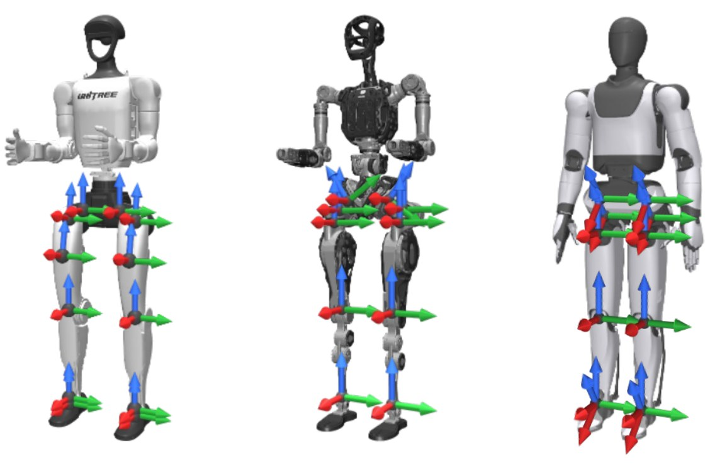
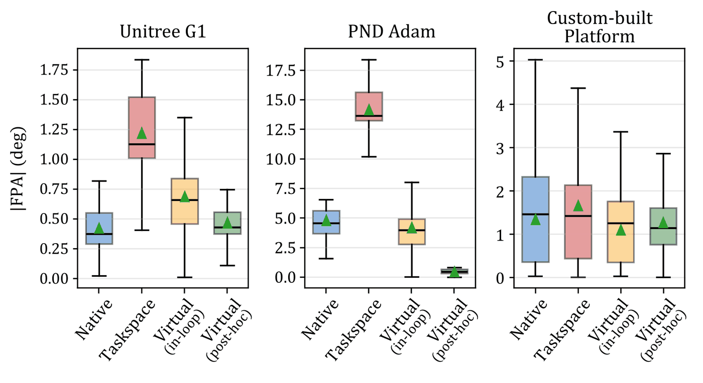
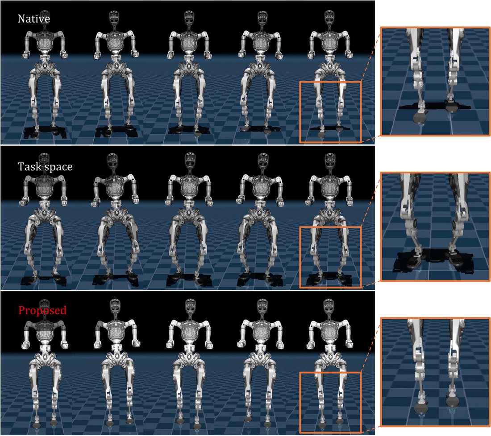
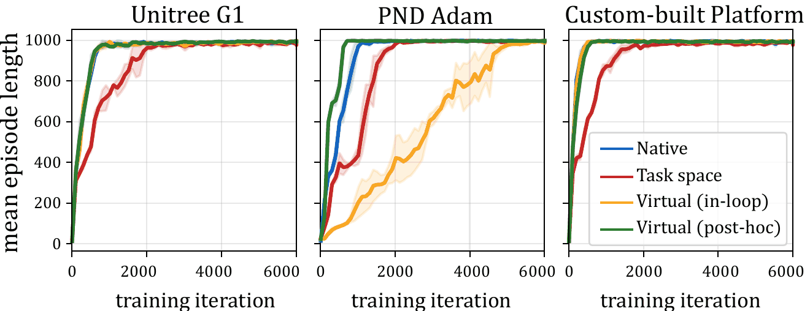
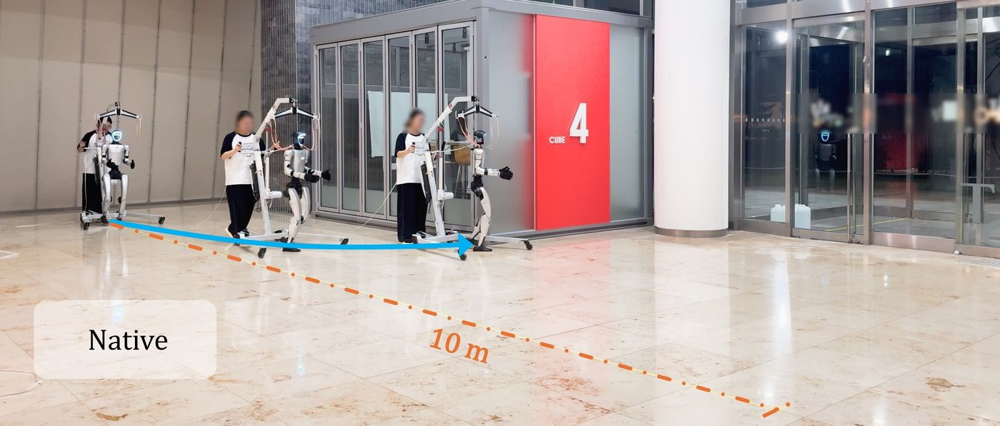
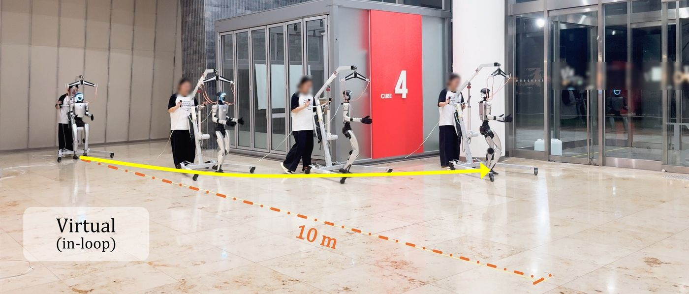
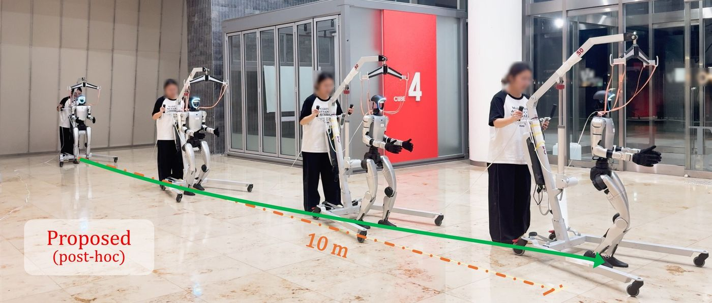

Video
One recipe, three humanoids
Locomotion training recipes — rewards, architectures, hyperparameters — are hard to reuse across robots, because policies output native joint angles while action scales, bounds, gains, and penalties are all defined in those robot-specific coordinates.
We add a body-aligned virtual joint space upstream of each robot’s transmission. Policy actions and observations follow one anatomical convention, and a deterministic kinematic layer maps virtual targets to native ones, leaving the existing control stack unchanged.
Under a single unmodified recipe on three humanoids with different leg-axis layouts, it is the only interface that tracks accurately, keeps the feet aligned with the travel direction, and trains stably on all three.
Less heading drift on Unitree G1 hardware. Absolute IMU yaw rate fell from 5.31 to 0.89 °/s over 6 rollouts.
Toe-out on every robot. On PND Adam, native coordinates give 4.8° and task space 14.2°.
Of training iterations unstable. Inserting the same map in the training loop reaches 15.3% on Adam.
A virtual joint layer, upstream of the transmission
The policy acts and observes in a shared body-aligned joint space. An analytic map converts virtual targets into each robot’s native joint targets; four-bar linkages, parallel ankles, PD control, and safety checks stay exactly as they were.

A canonical leg convention
Each leg becomes a 3-DoF hip (yaw, roll, pitch), a 1-DoF knee, and a 2-DoF ankle (roll, pitch), all about body-aligned axes: forward, left, and up.
Orientation matching
Native targets are found by matching link orientations, R̄g(qdes) = RVg(qV,des), choosing the solution branch continuous with the nominal pose.
Jacobian transfer
The coordinate Jacobian maps joint velocities, q̇V = J q̇, and turns one virtual PD gain set into native gains, Kr = diag(J⊤KVJ).
Post-hoc insertion
Train on a body-aligned model of the same robot, then apply the map only at deployment. This avoids the optimization instability that appears when the map runs inside the training loop.
Accurate tracking and aligned feet in simulation
Every policy is trained in Isaac Lab with the Unitree RL Lab velocity-tracking recipe and evaluated closed-loop in MuJoCo, over 25 velocity commands and three seeds. Only the joint-coordinate interface changes.

| Robot | Interface | Velocity error (m/s) | Lateral drift (m) |
|---|---|---|---|
| Unitree G1 | Native | 0.042 ± 0.001 | 0.086 ± 0.001 |
| Task space | 0.048 ± 0.002 | 0.129 ± 0.003 | |
| Virtual, in-loop | 0.042 ± 0.007 | 0.084 ± 0.001 | |
| Virtual, post-hocOURS | 0.053 ± 0.018 | 0.089 ± 0.003 | |
| PND Adam | Native | 0.106 ± 0.018 | 0.094 ± 0.007 |
| Task space | 0.207 ± 0.016 | 0.082 ± 0.010 | |
| Virtual, in-loop | 0.143 ± 0.034 | 0.113 ± 0.013 | |
| Virtual, post-hocOURS | 0.085 ± 0.018 | 0.075 ± 0.006 | |
| Custom-built | Native | 0.032 ± 0.005 | 0.042 ± 0.002 |
| Task space | 0.477 ± 0.333 | 0.120 ± 0.070 | |
| Virtual, in-loop | 0.033 ± 0.005 | 0.040 ± 0.003 | |
| Virtual, post-hocOURS | 0.029 ± 0.002 | 0.033 ± 0.005 |
TABLE 1Mean ± std over three seeds. Lateral drift is measured after a 20 s straight walk. Bold marks the best value per robot; the task-space baseline barely advances on the custom platform.


FIG. 3Left: foot-progression angle by platform and interface. Right: swing legs on PND Adam. With oblique hips, native coordinates splay the feet outward; the virtual interface keeps them aligned with the travel direction.

Six times less heading drift on hardware
We deployed each controller on a Unitree G1 with no reward retuning or gain adjustment and commanded it to walk straight at 0.5 m/s. In simulation the interfaces looked alike on G1; on hardware they did not.
REAL1×UNITREE G1vx = 0.5 m/s6 ROLLOUTS EACH

Native joint space
- Distance
- 5.1 ± 1.7 m
- Yaw rate
- 5.31 ± 1.90 °/s
Drifted to the edge of the test area and was stopped.

Virtual joint space, in-loop
- Distance
- 6.9 ± 3.0 m
- Yaw rate
- 4.08 ± 1.02 °/s
Drifted to the edge of the test area and was stopped.

Virtual joint space, post-hoc (ours)
- Distance
- 13.8 ± 1.1 m
- Yaw rate
- 0.89 ± 0.54 °/s
Every rollout reached the end of the walkway; distance was limited by the room.
The encoder and decoder add about 0.2 ms per control step on a Jetson Orin NX, roughly 1% of the 20 ms control period.
Cite this work
@inproceedings{choi2026reusing,
title = {Reusing Locomotion Training Recipes Across Humanoids
via Body-Aligned Virtual Joints},
author = {Choi, Sol and Kim, Mingon and Seo, Seokin and
Choi, Jongeun and Kim, Donghyeon and Lee, Yisoo},
booktitle = {IEEE-RAS Humanoids 2026 Workshop on Multimodal Data for
Humanoid Whole-Body Control and Manipulation},
year = {2026}
}